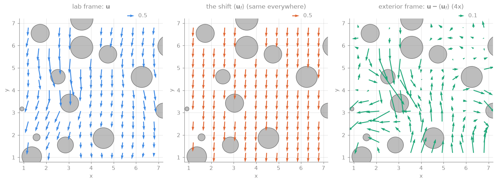
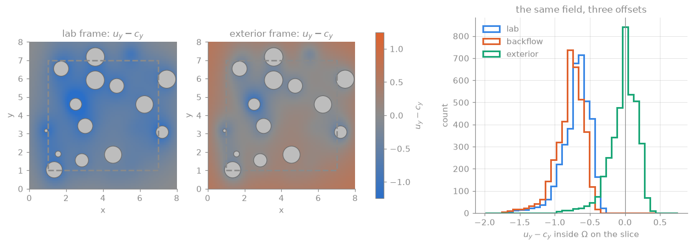
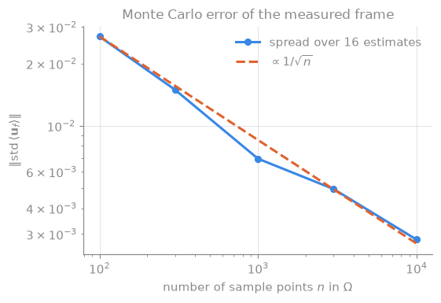
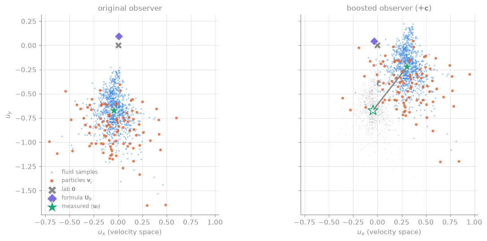
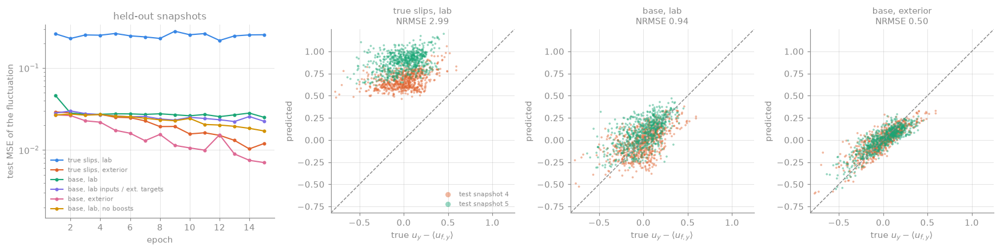
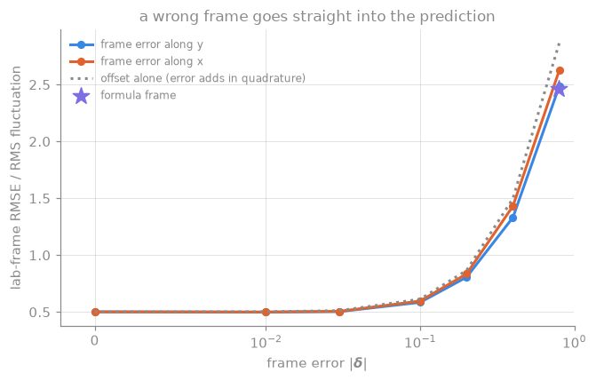

Frames: what velocity do we subtract?#
What you will learn
What a reference frame is for a velocity field: an origin in velocity space, and why “the fluid velocity” depends on who is watching.
Three frames on the toy: the lab frame, the backflow frame (a formula for the mean fluid motion) and the measured exterior-mean frame \(\langle\mathbf u_f\rangle\), and how each one changes the targets. Even the measured frame carries a convention: the region it averages over.
Why the target is \(\mathbf u - \langle\mathbf u_f\rangle\) and the particle input is \(\mathbf v_j - \langle\mathbf u_f\rangle\): Galilean invariance, checked to round-off.
The two ways a bad frame hurts a model: an offset it cannot see, and inputs that are no longer relative velocities. Quick fits separate the two.
Why a measured frame beats a formula on the toy, and the price: at inference the frame must be estimated, and its error goes straight into the prediction.
Prerequisites: Lesson 01a (the toy and its drift warning) and Lesson 01b (the slip \(\mathbf q_j\) as the particle’s state).
import time
import numpy as np
import matplotlib.pyplot as plt
import torch
from course_utils import plotting as cp
from course_utils.toy_data import (ToyConfig, ToySnapshot, make_snapshot, make_snapshots, make_dataset,
frame_shift, neighbour_inputs, slice_grid)
from course_utils.equivariance import check_equivariance, random_o3, report
from course_utils.training import train, predict, split_by_snapshot
from course_utils.metrics import nrmse
torch.set_num_threads(min(4, torch.get_num_threads())) # small models: a few threads are enough
T_START = time.time()
cfg = ToyConfig()
snaps = make_snapshots(6, cfg) # six independent toy snapshots (seeds 0..5)
snap = snaps[0]
1. The same flow, seen by different observers#
1.1 A frame is a velocity you subtract#
Stand on the bank of a river and the water rushes past. Drift with it in a boat and the water around you is nearly still; only the eddies remain. Both descriptions are correct. They differ by one constant vector, the velocity \(\mathbf c\) of the observer:
This is a change of reference frame (a Galilean change, because \(\mathbf c\) is constant in space and time). Geometrically, picture every velocity in the flow, fluid and particles alike, as a point in velocity space. The cloud of points is the flow; a frame is the choice of origin in that space. Changing frame moves the origin and leaves the cloud’s shape alone, so every relative velocity, such as the slip \(\mathbf q_j = \mathbf v_j - (\text{fluid seen by } j)\), is unchanged. (Section 2.1 draws this picture.)
In a settling suspension the fluid is not at rest on average: the particles push fluid around as they fall. Three choices of \(\mathbf c\) appear in this course:
frame |
\(\mathbf c\) |
needs |
|---|---|---|
lab |
\(\mathbf 0\) |
nothing; the velocities as the simulation reports them |
backflow (formula) |
\(\mathbf U_b = -\dfrac{\phi}{1-\phi}\,\langle\mathbf v\rangle\) |
the particle velocities and the volume fraction \(\phi\) |
exterior mean (measured) |
\(\langle\mathbf u_f\rangle = \dfrac{1}{\lvert\Omega\rvert}\displaystyle\int_{\Omega}\mathbf u\,\mathrm dV\) |
the fluid velocity everywhere in an averaging region \(\Omega\) of the fluid |
The backflow formula comes from a volume balance [Guazzelli and Morris, 2011]: in a closed or periodic box the total volume flux is zero, so if the particles (volume fraction \(\phi\)) move down with mean velocity \(\langle\mathbf v\rangle\), the fluid (volume fraction \(1-\phi\)) must move up with \(\mathbf U_b\), so that \(\phi\langle\mathbf v\rangle + (1-\phi)\mathbf U_b = \mathbf 0\). The measured mean makes no such assumption: it simply averages the fluid velocity over the fluid in \(\Omega\).
On the toy, \(\Omega\) is the fluid inside the box shrunk by one unit (one particle diameter) on every side, \([1, 7]^3\) minus the spheres. That is the same region the training points are drawn from: the toy’s open box has edge artifacts (Lesson 01a), and we keep both the queries and the average away from them. In a periodic simulation \(\Omega\) would be the whole fluid domain.
1.2 The three shifts on one snapshot#
On the toy, \(\langle\mathbf u_f\rangle\) is a Monte Carlo average over random points of \(\Omega\)
(snap.exterior_mean(), 4000 points by default). We also write the backflow formula out by hand, from the
particle velocities alone, and compare it with the toy’s own \(\mathbf U_b\).
def formula_frame(s):
"""Zero-net-flux backflow U_b = -phi/(1-phi) <v>, from the particle velocities alone."""
phi = s.config.volume_fraction
return -phi / (1 - phi) * s.velocity.mean(0)
print(report("formula_frame == toy's U_b", np.abs(formula_frame(snap) - snap.backflow).max(), 1e-12))
for name in ("lab", "backflow", "exterior"):
print(f"{name:9s} frame shift c = {np.round(frame_shift(snap, name), 4)}")
PASS formula_frame == toy's U_b: max error 0.0e+00 (tol 1e-12)
lab frame shift c = [0. 0. 0.]
backflow frame shift c = [ 0.0043 0.094 -0.0042]
exterior frame shift c = [-0.0456 -0.6721 0.0181]
The two non-trivial frames disagree, and on the toy they even point in opposite directions: the formula says the fluid moves up, while the measured mean moves down. This is the toy artifact flagged in Lesson 01a: every screened disturbance drags fluid along with its sphere, and nothing in the toy removes the net downward flux that results. The formula assumes zero net flux, which the toy violates. In a real periodic simulation that enforces zero net flux, and in the frame where the flux vanishes, the balance above holds exactly, so the fluid-averaged velocity is \(\mathbf U_b\). The formula is then right, but only under conditions: the data must be reported in the zero-flux frame, the flow must be forced with that convention, and the average must cover the whole fluid region the formula assumes.
A measurement needs no flux assumption. It is not convention-free, though: it depends on what you average over. Shrink or grow the region \(\Omega\) and the measured frame moves:
for bm in (0.0, 0.5, 1.0, 1.5, 2.0):
pts_bm = snap.sample_exterior(4000, rng=12345, box_margin=bm)
tag = " <- the course's Omega (exterior_mean)" if bm == 1.0 else ""
print(f"average over [{bm:.1f}, {cfg.box - bm:.1f}]^3 : <u_f> = {np.round(snap.field(pts_bm).mean(0), 3)}{tag}")
average over [0.0, 8.0]^3 : <u_f> = [-0.024 -0.489 0.017]
average over [0.5, 7.5]^3 : <u_f> = [-0.037 -0.603 0.02 ]
average over [1.0, 7.0]^3 : <u_f> = [-0.046 -0.672 0.018] <- the course's Omega (exterior_mean)
average over [1.5, 6.5]^3 : <u_f> = [-0.046 -0.708 0.01 ]
average over [2.0, 6.0]^3 : <u_f> = [-0.032 -0.729 0.001]
On the toy the vertical component moves by about 0.2 between the whole box and \([1,7]^3\), more than the RMS of the fluctuation we are trying to predict (about 0.16, Section 4.2). The open box makes this extreme: the dragged-along fluid is concentrated in the middle of the suspension. In a periodic simulation the natural choice, the whole fluid domain, is unambiguous. The rule is the same everywhere: the frame is defined by its averaging region, and that region must be stated and kept fixed between training and evaluation. That, and not the flux assumption, is the first reason the research measures the frame: the measurement works in whatever frame the data happen to be reported in.
1.3 What subtracting a frame does to the picture#
Here is the same slice of the toy (plane \(z = 4\)) drawn three ways. Arrows are in-plane velocities on a coarse grid inside \(\Omega\). In the middle panel the one vector \(\langle\mathbf u_f\rangle\) is drawn at every grid point: it is what the observer subtracts. The right panel is the difference, magnified four times so that it can be seen; the arrow keys give the scale of each panel.

On the left almost every arrow points down: the common drift dominates and hides the structure. Peel off the common arrow (middle) and what is left (right, magnified) is a pattern of local swirls: fluid near a sphere is dragged with it, and in the gaps the fluid moves up relative to the mean. In the lab frame almost no fluid on this slice actually moves up (see the histogram below); “return flow” exists only relative to \(\langle\mathbf u_f\rangle\). Some of the largest residual arrows sit near the edges of \(\Omega\), pointing up: that is the open box again, where the dragged-along fluid thins out and the local velocity falls short of the interior mean. A periodic simulation has no such edge.
The colour version makes the same point quantitatively. Both maps share one colour scale for the vertical component; the dashed square marks the averaging region \(\Omega\), and the histograms count only the slice points inside it.

mean of u_y - <u_f>_y over the slice points inside Omega: -0.024
The three histograms have the same shape; a frame only slides it. In the lab frame the whole plane carries one colour, a large uniform offset; the backflow frame looks the same, because on the toy \(\mathbf U_b\) is small and has the wrong sign. Only the exterior frame centres the histogram. Its mean over the slice is close to zero but not exactly zero: \(\langle\mathbf u_f\rangle\) averages over the whole volume \(\Omega\), and one plane through it is a sample, not the average. The orange is strongest outside the dashed square: there the fluid falls more slowly than the interior mean, the edge effect of the previous paragraph.
1.4 How well is the frame measured?#
Once the region is fixed, \(\langle\mathbf u_f\rangle\) is estimated from a finite number of points of \(\Omega\). Its Monte Carlo error should fall like \(1/\sqrt{n}\):
ns = [100, 300, 1000, 3000, 10000]
spread = []
for n_mc in ns:
est = np.array([snap.field(snap.sample_exterior(n_mc, rng=1000 + r)).mean(0) for r in range(16)])
spread.append(np.linalg.norm(est.std(0)))
for n_mc, s_ in zip(ns, spread):
print(f"{n_mc:6d} points: spread of the <u_f> estimate {s_:.1e}")
100 points: spread of the <u_f> estimate 2.7e-02
300 points: spread of the <u_f> estimate 1.5e-02
1000 points: spread of the <u_f> estimate 6.9e-03
3000 points: spread of the <u_f> estimate 5.0e-03
10000 points: spread of the <u_f> estimate 2.8e-03

The spread follows the \(1/\sqrt n\) line, up to the noise of estimating a spread from 16 repeats. With thousands of points the sampling error is a few thousandths, small next to any model error we will see; a simulation has its full mesh, so it is essentially exact there. Compare it with Section 1.2, though: changing the averaging region moved the frame about forty times further than the Monte Carlo error at 3000 points. The convention matters far more than the sample size. Keep this curve in mind for Section 4: it is the cheapest frame error we can hope for.
2. Why the target is \(\mathbf u - \langle\mathbf u_f\rangle\)#
2.1 Physics does not know where the observer stands#
The Stokes and Navier-Stokes equations are Galilean invariant: add a constant \(\mathbf c\) to the fluid and to every particle and you get another valid solution, the same flow seen by a moving observer. The disturbance a particle creates depends on its velocity relative to the fluid, never on its absolute velocity. The toy has this property too. Its field is a uniform stream plus one disturbance per sphere, \(\mathbf u = \mathbf U + \sum_j G(\mathbf x - \mathbf r_j)\mathbf s_j\), and the slips are found from \(\mathbf v - \mathbf U\). Boost both \(\mathbf v\) and \(\mathbf U\) by \(\mathbf c\) and the slips do not change.
We build “boosted” copies of each snapshot: the same suspension seen by an observer moving with \(-\mathbf c\).
def boost(s, c):
"""The same suspension seen by an observer moving with velocity -c: every velocity gains +c.
Slips (relative velocities) are unchanged. The toy's stored `backflow` is its uniform stream U,
so it is boosted too; the *formula* recomputed from the boosted velocities is not (Exercise 2)."""
return ToySnapshot(s.positions, s.velocity + c, s.slip, s.backflow + c, s.phi_local, s.config, s.grid)
rng = np.random.default_rng(7)
boosts = rng.normal(scale=0.5, size=(len(snaps), 3)) # one random observer per snapshot
boosted = [boost(s, c) for s, c in zip(snaps, boosts)]
# the boost is a real Galilean transformation of the toy: recompute the slip from scratch
from course_utils.toy_data import solve_slip
s_re = solve_slip(snap.positions, snap.velocity + boosts[0], snap.backflow + boosts[0], cfg)
print(report("slip unchanged by a boost (re-solved)", np.abs(s_re - snap.slip).max(), 1e-12))
pts = snap.sample_exterior(1000, rng=3)
print(report("field shifts by exactly c", np.abs(boosted[0].field(pts) - snap.field(pts) - boosts[0]).max(), 1e-12))
PASS slip unchanged by a boost (re-solved): max error 3.3e-16 (tol 1e-12)
PASS field shifts by exactly c: max error 5.6e-17 (tol 1e-12)
Here is the velocity-space picture of Section 1.1, for an in-plane boost \(\mathbf c = (0.35, 0.45, 0)\) so that the translation shows. Each fluid sample point and each particle is one dot at its \((u_x, u_y)\). The three frame origins are marked. The boost translates the whole cloud by \(\mathbf c\) (arrow; the grey ghost and the hollow star are the original cloud and its mean). The measured mean is an average of the cloud, so it rides along exactly; the lab origin stays where it was; the formula moves by only \(-\tfrac{\phi}{1-\phi}\mathbf c\), a small step in the opposite direction (Exercise 2).

A model that sees only differences between dots and the measured origin sees the same picture for every observer. That is the whole argument of this section in one image; the next cell checks it on the training data.
2.2 Failure first: the lab frame sees the observer#
Now build training data from the original and the boosted snapshots, in the lab frame and in the exterior frame. If a frame removes the observer, the two datasets are identical.
def dataset_gap(frame):
d0 = make_dataset(snaps, n_points=300, M=32, frame=frame, seed=0)
d1 = make_dataset(boosted, n_points=300, M=32, frame=frame, seed=0)
return {k: float((d0[k] - d1[k]).abs().max()) for k in ("scalars", "e_j", "x_fj", "y")}
for frame in ("lab", "exterior"):
gap = dataset_gap(frame)
print(report(f"{frame:8s} frame: inputs unchanged by the boost ", max(gap[k] for k in ("scalars", "e_j", "x_fj")),
1e-12, f"|q_j| {gap['scalars']:.1e}, e_j {gap['e_j']:.1e}, x_fj {gap['x_fj']:.1e}"))
print(report(f"{frame:8s} frame: targets unchanged by the boost", gap["y"], 1e-12))
q_ext = [np.linalg.norm(s.velocity - s.exterior_mean(), axis=1).min() for s in snaps]
print(f"smallest |q_j| in the exterior frame: {min(q_ext):.3f}")
FAIL lab frame: inputs unchanged by the boost : max error 1.7e+00 (tol 1e-12) [|q_j| 7.9e-01, e_j 1.7e+00, x_fj 0.0e+00]
FAIL lab frame: targets unchanged by the boost: max error 6.7e-01 (tol 1e-12)
PASS exterior frame: inputs unchanged by the boost : max error 4.1e-14 (tol 1e-12) [|q_j| 2.6e-15, e_j 4.1e-14, x_fj 0.0e+00]
PASS exterior frame: targets unchanged by the boost: max error 2.7e-15 (tol 1e-12)
smallest |q_j| in the exterior frame: 0.042
In the lab frame both the inputs (\(|\mathbf q_j|\) and \(\mathbf e_j\) come from \(\mathbf v_j\)) and the targets change by an amount of order one. In the exterior frame both are unchanged to round-off, because the measured mean shifts by exactly \(\mathbf c\) (with a fixed set of sample points) and cancels the boost in both places. The geometric part \(\mathbf x_{fj}\) does not involve velocities at all and agrees exactly. \(|\mathbf q_j|\) and the targets agree to a few \(10^{-15}\): \(\langle\mathbf u_f\rangle\) is a sum of 4000 values, each carrying its own rounding. The direction \(\mathbf e_j = \mathbf q_j/|\mathbf q_j|\) is about ten times worse, because dividing by \(|\mathbf q_j|\), as small as 0.04 here, amplifies that \(10^{-15}\). This is round-off, not a symmetry leak.
This is why the research subtracts the measured \(\langle\mathbf u_f\rangle\) from both the target velocities and the particle velocities: the network then sees only relative velocities, which are what the physics depends on. (In the research code the per-snapshot measured mean is supplied as a file. The formula frame was the earlier default, and the measured frame replaced it for the reason of Section 1.2.)
2.3 The frame is a vector, so subtracting it keeps equivariance#
Subtracting a frame must not break the rotation symmetry checked in Lesson 01a. It does not, provided the averaging region turns with the suspension: rotate (or reflect) the suspension and the region together, and the mean rotates with them. We test this by averaging over a fixed set of sample points that we rotate along with the suspension.
c0 = np.full(3, cfg.box / 2)
move = lambda x, g: c0 + (x - c0) @ g.T # rotate/reflect points about the box centre
mean0 = snap.field(pts).mean(0)
worst, dets, rotated_snaps = 0.0, [], []
for gm in random_o3(4, seed=3).numpy():
sg = snap.rotated(gm)
rotated_snaps.append((gm, sg))
mean_g = sg.field(move(pts, gm)).mean(0)
worst = max(worst, np.abs(mean_g - gm @ mean0).max() / np.abs(mean0).max())
dets.append(int(round(np.linalg.det(gm))))
print(report("mean over a rotating region is an O(3) vector", worst, 1e-12, f"4 random g, det = {sorted(set(dets))}"))
PASS mean over a rotating region is an O(3) vector: max error 1.3e-15 (tol 1e-12) [4 random g, det = [-1, 1]]
The toy’s own exterior_mean(), the one make_dataset(frame="exterior") subtracts, does not do this. It
always samples the axis-aligned cube \([1,7]^3\), and a cube is not invariant under a general rotation: the
rotated suspension is averaged over a differently placed region. The error is systematic, not noise:
mc_spread = spread[ns.index(3000)] * np.sqrt(3000 / 4000) # Monte Carlo spread at the default 4000 points
for gm, sg in rotated_snaps:
gap = np.linalg.norm(sg.exterior_mean() - gm @ snap.exterior_mean())
print(f"|rotated.exterior_mean() - g exterior_mean()| = {gap:.3f} ({gap / mc_spread:.0f}x the Monte Carlo spread)")
|rotated.exterior_mean() - g exterior_mean()| = 0.047 (11x the Monte Carlo spread)
|rotated.exterior_mean() - g exterior_mean()| = 0.032 (8x the Monte Carlo spread)
|rotated.exterior_mean() - g exterior_mean()| = 0.038 (9x the Monte Carlo spread)
|rotated.exterior_mean() - g exterior_mean()| = 0.033 (8x the Monte Carlo spread)
So the toy’s measured frame is equivariant only up to a few hundredths, a sizable fraction of the fluctuation. That is why Lesson 02a checks its model in the backflow frame, which “rotates exactly with the suspension”. An exactly equivariant measured frame needs an averaging region that turns with the suspension (a ball about the suspension’s centre, or the sample points rotated as above) or a domain with no preferred orientation to break, such as the whole fluid of a periodic simulation whose symmetry checks use the box’s own rotations. Keep this in mind whenever an equivariance check is run on data in the toy’s exterior frame.
A tempting shortcut fails a stricter test. Instead of measuring the frame, give the network a learnable constant vector \(\mathbf b\) and let it absorb the mean: \(\mathbf u \approx \mathrm{A0}(\dots) + \mathbf b\). A fixed vector points the same way however the suspension is turned:
class A0PlusBias(torch.nn.Module):
def __init__(self):
super().__init__()
self.a0 = cu.models.MiniA0(16, 2)
self.b = torch.nn.Parameter(torch.tensor([0.0, -0.7, 0.0])) # "the mean drift, learned once"
def forward(self, s, e, x):
return self.a0(s, e, x) + self.b
torch.manual_seed(0)
mb = A0PlusBias().double()
probe = neighbour_inputs(pts[:64], snap.positions, snap.velocity - u_f, snap.phi_local, cfg.density_ratio, M=16)
args = (probe["scalars"], probe["e_j"], probe["x_fj"])
check_equivariance(mb.a0, args, ("scalar", "vector", "vector"), name="A0 alone")
try:
check_equivariance(mb, args, ("scalar", "vector", "vector"), name="A0 + learned bias vector")
except AssertionError as err:
print("caught:", err)
PASS A0 alone: max error 3.3e-16 (tol 1e-12) [5 random g in O(3), det = [-1, 1]]
FAIL A0 + learned bias vector: max error 1.4e+00 (tol 1e-12) [5 random g in O(3), det = [-1, 1]]
caught: A0 + learned bias vector: equivariance error 1.358e+00 >= tol 1.0e-12
A bias vector also cannot follow a mean that changes between snapshots. A measured frame over a region that turns with the suspension does both: it is equivariant, and it is recomputed per snapshot.
3. What the frame does to learnability#
3.1 Two ways a frame can hurt#
A model that sums \(M\) per-neighbour terms \(\mathbf m_j \in \mathrm{span}(\mathbf x_{fj}, \mathbf e_j)\) (Part II) has no built-in notion of the observer. A frame shift can reach it in two different ways.
A hidden offset. Suppose the inputs are relative velocities that do not change with the observer, such as the exact slips \(\mathbf s_j\). In the lab frame the target still shifts by \(\mathbf c\) under a boost. Two observers then show the network identical inputs with different targets. No model can fit both: the best it can do is the average, and each test snapshot is off by its own offset.
Inputs that are not relative velocities. In practice the slip is unknown, and the starting state is \(\mathbf q_j^{\text{base}} = \mathbf v_j - \mathbf c_{\text{frame}}\) (Lesson 01b). In the lab frame that is just \(\mathbf v_j\). Its size \(|\mathbf q_j|\) and direction \(\mathbf e_j\) now depend on the observer, so they no longer describe the local physics. The offset is not hidden any more (a sum over 32 neighbours can estimate \(\mathbf c\) from them), but every per-neighbour term is computed from corrupted features.
The exterior frame removes both: targets and inputs are relative to the measured mean, so a boost changes nothing (Section 2.2). The exterior-frame datasets with and without boosts are identical, so its score is the same with or without observers.
3.2 Quick fits that separate the two#
We train the same A0 network, with the same budget, on four training snapshots, and test on the two held-out ones. The runs differ only in the inputs’ state, the inputs’ frame and the targets’ frame. All use the boosted snapshots except the last, which shows what the lab frame costs when no observer moves at all. The budget is small (700 points per snapshot, 15 epochs), so all models are undertrained in absolute terms. Only the comparison at equal budget matters here.
To score every run on the same quantity we use the NRMSE of the fluctuation \(\mathbf u - \langle\mathbf u_f\rangle\): we add each run’s target shift back to its prediction and subtract the true measured \(\langle\mathbf u_f\rangle\). (Own-frame \(R^2\) would not be comparable: each frame’s target has a different variance.) We also print the mean prediction error on each test snapshot, its bias: a hidden offset shows up there.
train_ids, test_ids = [0, 1, 2, 3], [4, 5]
uf_all = np.array([s.exterior_mean() for s in boosted]) # measured frame of every boosted snapshot
def run_fit(snap_list, state, in_frame, out_frame):
"""Train MiniA0 with inputs from `in_frame` and targets in `out_frame`; score on the fluctuation."""
d = make_dataset(snap_list, n_points=700, M=32, frame=out_frame, state=state, seed=0, dtype=torch.float32)
if in_frame != out_frame: # same seed -> same sample points and neighbours; swap only the inputs
d_in = make_dataset(snap_list, n_points=700, M=32, frame=in_frame, state=state, seed=0, dtype=torch.float32)
for k in ("scalars", "e_j", "x_fj"):
d[k] = d_in[k]
tr, te = split_by_snapshot(d, train_ids, test_ids)
torch.manual_seed(0)
model = cu.models.MiniA0(64, 3)
hist = train(model, tr, epochs=15, lr=1e-3, batch=64, seed=0, val=te, verbose=False)
pred, sid = predict(model, te).double().numpy(), te["snapshot"].numpy()
shift = np.array([frame_shift(s, out_frame) for s in snap_list])[sid]
uf = np.array([s.exterior_mean() for s in snap_list])[sid]
p, y = pred + shift - uf, te["y"].double().numpy() + shift - uf # both as fluctuations
bias = [np.linalg.norm((p - y)[sid == i].mean(0)) for i in test_ids]
return dict(model=model, hist=hist, pred=p, true=y, sid=sid, bias=bias,
err=nrmse(torch.as_tensor(p), torch.as_tensor(y)))
runs = {"true slips, lab": (boosted, "true", "lab", "lab"),
"true slips, exterior": (boosted, "true", "exterior", "exterior"),
"base, lab": (boosted, "base", "lab", "lab"),
"base, lab inputs / ext. targets": (boosted, "base", "lab", "exterior"),
"base, exterior": (boosted, "base", "exterior", "exterior"),
"base, lab, no boosts": (snaps, "base", "lab", "lab")}
fits = {}
print(f"{'run':33s} NRMSE |bias| per test snapshot")
for name, spec in runs.items():
fits[name] = run_fit(*spec)
f = fits[name]
print(f"{name:33s} {f['err']:.3f} " + " ".join(f"{b:.2f}" for b in f["bias"]))
print(f"\nboosts of the test snapshots: |c| = " + " ".join(f"{np.linalg.norm(boosts[i]):.2f}" for i in test_ids))
run NRMSE |bias| per test snapshot
true slips, lab 2.991 0.68 0.96
true slips, exterior 0.650 0.01 0.03
base, lab 0.938 0.03 0.09
base, lab inputs / ext. targets 0.887 0.01 0.02
base, exterior 0.497 0.01 0.01
base, lab, no boosts 0.775 0.01 0.04
boosts of the test snapshots: |c| = 0.47 0.79

The MSE on the left is the same whichever frame it is computed in (a frame adds the same constant to the prediction and the truth), so the curves are directly comparable. Read the table in pairs.
True slips: the hidden offset. With relative inputs, the lab-frame model’s bias on each test snapshot is of the order of the boosts: it predicts for the average training observer and cannot know which observer it is looking at. In the parity plot the two test snapshots form two parallel clouds, lifted off the diagonal by different amounts. The exterior frame removes the offset and the error drops several-fold. (Do not compare across the two pairs: exact slips and base states are different features, and at this small budget either can come out ahead.)
Base states: the corrupted inputs. With \(\mathbf q_j^{\text{base}} = \mathbf v_j\), the lab model’s bias is small: it does read the observer from its inputs and follows it. Its error is almost all fluctuation error, a smeared cloud rather than displaced ones. Subtracting the measured frame from the targets only (“lab inputs / ext. targets”) barely helps: the remaining penalty comes from the inputs, whose \(|\mathbf q_j|\) and \(\mathbf e_j\) change with the observer. That is the “Why both” note below, now measured.
No boosts at all. Even with one observer, the lab frame lands well above the exterior frame: lab velocities are not relative velocities, so the base states describe the local physics poorly even when nothing moves. Boosts make it worse, but most of the gap is already there.
Only the frame changed between these runs: same snapshots, same network, same budget. This is why the research trains in the measured exterior-mean frame.
Why both, not just the target
Subtracting the frame only from the target leaves the inputs in the lab frame: the network then has to learn that an input \(\mathbf v_j + \mathbf c\) means “the same flow, shifted by \(-\mathbf c\)”, from features that no longer describe the local physics. The “lab inputs / ext. targets” run shows the cost. Shifting both keeps the input-output pair invariant, so nothing has to be learned. Exercise 2 shows that the backflow formula does not have this property.
Note what the exterior model’s score quietly assumed: to turn its prediction into a lab-frame velocity we added back the measured \(\langle\mathbf u_f\rangle\) of the test snapshot, and its inputs were built from \(\mathbf v_j - \langle\mathbf u_f\rangle\). Section 4 asks what happens when that measurement is not available.
4. Measured versus formula frame, and the inference caveat#
4.1 The frame across snapshots#
Here are the formula frame and the measured frame for the six original (unboosted) snapshots:
vec = lambda w: " ".join(f"{x:+.3f}" for x in w)
print(f"{'seed':>4s} {'formula U_b':^22s} {'measured <u_f>':^22s} |difference|")
for k, s in enumerate(snaps):
ub, uf = formula_frame(s), s.exterior_mean()
print(f"{k:4d} {vec(ub):>22s} {vec(uf):>22s} {np.linalg.norm(ub - uf):.3f}")
seed formula U_b measured <u_f> |difference|
0 +0.004 +0.094 -0.004 -0.046 -0.672 +0.018 0.768
1 +0.007 +0.101 +0.001 -0.048 -0.693 +0.008 0.796
2 +0.001 +0.098 -0.000 -0.016 -0.705 +0.001 0.804
3 +0.005 +0.103 +0.002 -0.000 -0.713 +0.005 0.816
4 +0.001 +0.101 -0.003 -0.016 -0.681 +0.008 0.782
5 -0.002 +0.102 -0.001 -0.011 -0.697 +0.050 0.801
On the toy the formula misses the measured frame by more than the typical fluctuation in every snapshot (for the toy-specific reason of Section 1.2). The backflow frame therefore leaves an even larger offset in its targets than the lab frame does, and a fit in it does no better than the lab-frame fit; Exercise 1 checks this.
4.2 The price of a measured frame#
The measured frame needs the fluid velocity, but the fluid velocity is what the surrogate is supposed to predict. In training this is harmless: the simulation provides the fluid. At inference, on a new configuration, \(\langle\mathbf u_f\rangle\) must come from somewhere else: a formula, a coarse fluid solver that the surrogate is coupled to, a separate model of the mean, or a measurement of some other kind. The Galilean argument of Section 2 does not require a fluid measurement: any estimate that shifts by exactly \(\mathbf c\) under a boost keeps the data observer-independent. One can be built from particle data alone, for example \(\langle\mathbf v\rangle\) minus an estimated mean slip (Exercise 4). Whatever the source, its error \(\boldsymbol\delta = \hat{\mathbf c} - \langle\mathbf u_f\rangle\) enters twice: the inputs become \(\mathbf v_j - \hat{\mathbf c}\), and the lab-frame prediction is model output \(+\,\hat{\mathbf c}\).
We take the trained exterior model and feed it frame estimates with a controlled error \(\boldsymbol\delta\) along the settling direction \(y\) and across it (\(x\)). No retraining is needed.
ext_model = fits["base, exterior"]["model"]
test_pts = {i: boosted[i].sample_exterior(700, rng=50 + i) for i in test_ids}
truth = {i: boosted[i].field(test_pts[i]) for i in test_ids}
fluct_rms = np.sqrt(np.mean(np.concatenate([truth[i] - uf_all[i] for i in test_ids]) ** 2))
def lab_error(estimate):
"""Relative lab-frame error when frame estimate estimate[i] replaces the measured <u_f>."""
errs = []
for i in test_ids:
s = boosted[i]
inp = neighbour_inputs(test_pts[i], s.positions, s.velocity - estimate[i], s.phi_local,
s.density_ratio, M=32, dtype=torch.float32)
p = predict(ext_model, inp).double().numpy() + estimate[i]
errs.append(p - truth[i])
return np.sqrt(np.mean(np.concatenate(errs) ** 2)) / fluct_rms
deltas = np.array([0.0, 0.01, 0.03, 0.1, 0.2, 0.4, 0.8])
curves = {ax_name: [lab_error({i: uf_all[i] + d * np.eye(3)[ax_k] for i in test_ids}) for d in deltas]
for ax_name, ax_k in (("along y", 1), ("along x", 0))}
for d, ey, ex in zip(deltas, curves["along y"], curves["along x"]):
print(f"|delta| = {d:4.2f}: relative lab error {ey:.3f} (along y) {ex:.3f} (along x)")
# the formula holds in the box frame (zero net flux); seen by the boosted observer it is U_b + c
formula_est = {i: formula_frame(snaps[i]) + boosts[i] for i in test_ids}
err_formula = lab_error(formula_est)
err_mc100 = lab_error({i: boosted[i].field(boosted[i].sample_exterior(100, rng=900 + i)).mean(0) for i in test_ids})
print(f"formula frame estimate : relative lab error {err_formula:.3f}")
print(f"measured with only 100 points : relative lab error {err_mc100:.3f}")
print(f"RMS of the fluctuation on the test snapshots: {fluct_rms:.3f}")
|delta| = 0.00: relative lab error 0.501 (along y) 0.501 (along x)
|delta| = 0.01: relative lab error 0.499 (along y) 0.499 (along x)
|delta| = 0.03: relative lab error 0.504 (along y) 0.506 (along x)
|delta| = 0.10: relative lab error 0.585 (along y) 0.597 (along x)
|delta| = 0.20: relative lab error 0.806 (along y) 0.834 (along x)
|delta| = 0.40: relative lab error 1.331 (along y) 1.430 (along x)
|delta| = 0.80: relative lab error 2.486 (along y) 2.625 (along x)
formula frame estimate : relative lab error 2.461
measured with only 100 points : relative lab error 0.499
RMS of the fluctuation on the test snapshots: 0.164

Read the curve from the left. With the measured frame (\(\boldsymbol\delta = \mathbf 0\)) the error is the model’s own. Small frame errors, of the size a few hundred Monte Carlo points leave (Section 1.4), barely register. Once \(|\boldsymbol\delta|\) becomes comparable to the fluctuation itself the error climbs steeply, and it does so along both directions. The dotted line is what the offset alone would cost if the model’s output did not change. The measured curves stay near it and slightly below at large errors: the shifted inputs make the model respond, partly against the offset, but nowhere near enough to cancel it. The formula frame (evaluated in the box frame, where it is meant to hold, then moved to the observer’s frame) sits far up the curve on this toy. So does a change of averaging region of the size seen in Section 1.2 (about 0.2): an evaluation that measures the frame over a different region than training did pays for it here. The lesson is not “never use a formula” but this:
The frame is part of the model
A surrogate trained in the measured frame predicts fluctuations about \(\langle\mathbf u_f\rangle\), defined over a stated region. At inference it needs an estimate of \(\langle\mathbf u_f\rangle\), and the error of that estimate adds directly to the prediction error. Report which frame estimate, and which averaging region, an evaluation used. Scores computed with the measured frame (as in Section 3) are the best case: they assume the frame is known.
Summary#
A frame is a constant velocity \(\mathbf c\) subtracted from the fluid and from the particles: a choice of origin in velocity space. It slides the distribution of velocities without changing its shape, and it leaves every relative velocity unchanged.
Three frames on the toy: lab (\(\mathbf 0\)), backflow (the zero-net-flux formula \(\mathbf U_b\)) and measured exterior mean \(\langle\mathbf u_f\rangle\). On the toy the formula even has the wrong sign, a known toy artifact. A measurement needs no flux assumption, but it is defined by its averaging region, which must be stated and kept fixed.
The physics is Galilean invariant. Subtracting the measured \(\langle\mathbf u_f\rangle\) from both targets and particle velocities makes the training data independent of the observer (checked to round-off). Averaged over a region that turns with the suspension, the measured frame is an O(3) vector; the toy’s axis-aligned cube is equivariant only to a few hundredths, and a learned bias vector breaks equivariance outright.
A bad frame hurts in two ways: a hidden offset when the inputs are relative (bias of the size of the boost), and corrupted inputs when they are not (lab velocities as states). The exterior frame removes both; most of the lab-frame penalty with base states comes from the inputs and is there even without boosts.
The price: at inference the frame must be estimated, and the estimate’s error goes straight into the prediction. Any estimate that shifts by \(\mathbf c\) under a boost keeps the Galilean invariance; scores computed with the measured frame assume it is known.
print(f"lesson runtime: {time.time() - T_START:.0f} s")
lesson runtime: 50 s
Exercises#
A fit in the backflow frame. Repeat the “base, lab, no boosts” fit of Section 3.2 in the
backflowframe. Section 4.1 predicted that it does no better than the lab frame. Does it, and why?Is the formula frame Galilean invariant? Compute
formula_frameforsnapand forboost(snap, c)withc = boosts[0]. Does the formula frame shift byc? What does that imply for a model trained in the backflow frame?A calibrated frame estimate. A formula can be calibrated. Generate snapshots with different numbers of particles, fit \(\langle\mathbf u_f\rangle \approx k\,\langle\mathbf v\rangle\) by least squares on some of them, and test the fitted estimate on the others. How large is the frame error \(|\boldsymbol\delta|\) compared with the formula’s, and where would it sit on the curve of Section 4.2?
An estimate that rides with the observer. Instead of scaling \(\langle\mathbf v\rangle\), offset it: \(\hat{\mathbf c} = \langle\mathbf v\rangle + \mathbf b(\phi)\), with \(\mathbf b = \mathbf b_0 + \phi\,\mathbf b_1\) fitted on the same training snapshots as Exercise 3. Check that \(\hat{\mathbf c}\) shifts by exactly \(\mathbf c\) under a boost, and compare its held-out \(|\boldsymbol\delta|\) with Exercise 3.
Solution 1
fb = run_fit(snaps, "base", "backflow", "backflow")
print(f"backflow frame, no boosts: NRMSE {fb['err']:.3f} "
f"(lab {fits['base, lab, no boosts']['err']:.3f}, exterior {fits['base, exterior']['err']:.3f})")
It lands next to the lab frame, not near the exterior frame. On the toy \(\mathbf U_b\) is a small vector with the wrong sign, so the backflow frame is almost the lab frame: its base states \(\mathbf v_j - \mathbf U_b\) are no closer to relative velocities, and its targets carry a slightly larger offset. A frame helps only if it is close to the real mean fluid velocity.
Solution 2
c = boosts[0]
shift = formula_frame(boost(snap, c)) - formula_frame(snap)
phi = cfg.volume_fraction
print("formula frame shifts by", np.round(shift, 4), " c =", np.round(c, 4))
print(report("shift == -phi/(1-phi) c", np.abs(shift + phi / (1 - phi) * c).max(), 1e-12))
The formula shifts by \(-\tfrac{\phi}{1-\phi}\mathbf c\), not by \(\mathbf c\). The culprit is that scaling: a multiple of \(\langle\mathbf v\rangle\) ties the formula to the one frame in which the net volume flux vanishes, so it is not Galilean invariant. A model trained in the backflow frame would see a different input-output pair for each observer, just like the lab frame, only scaled. Being a formula is not the problem: an estimate built from particle data that shifts by \(\mathbf c\) is invariant (Exercise 4). The backflow formula is fine if every snapshot is reported in its zero-flux frame, which is an extra assumption about the data.
Solution 3
var = [make_snapshot(cfg, n_particles=n, seed=20 + k) for k, n in enumerate([48, 72, 96, 120, 144, 60, 132])]
V = np.array([s.velocity.mean(0) for s in var])
Uf = np.array([s.exterior_mean() for s in var])
fit_ids, held_ids = [0, 2, 4, 5], [1, 3, 6]
k_fit = (V[fit_ids] * Uf[fit_ids]).sum() / (V[fit_ids] ** 2).sum() # least squares, one scalar
for i in held_ids:
est = k_fit * V[i]
print(f"N = {var[i].n:3d}: calibrated |delta| = {np.linalg.norm(est - Uf[i]):.3f} "
f"formula |delta| = {np.linalg.norm(formula_frame(var[i]) - Uf[i]):.3f}")
A single fitted factor \(k\) removes most of the formula’s error, but not all of it: the drift also depends on the number of particles, which \(k\langle\mathbf v\rangle\) ignores. Try adding \(\phi\) as a second feature (for example \(\langle\mathbf u_f\rangle \approx (k_0 + k_1\phi)\langle\mathbf v\rangle\)) and see whether the held-out error drops. Either way the held-out \(|\boldsymbol\delta|\) lands somewhere on the curve of Section 4.2, and that curve tells you how much of the surrogate’s accuracy the frame estimate costs. Note that \(k\langle\mathbf v\rangle\) is again not Galilean invariant unless \(k = 1\) (Exercise 2), so it only works for data reported in one consistent frame.
Solution 4
phis = np.array([s.config.volume_fraction for s in var])
A_fit = np.stack([np.ones(len(fit_ids)), phis[fit_ids]], 1)
b0, b1 = np.linalg.lstsq(A_fit, Uf[fit_ids] - V[fit_ids], rcond=None)[0] # offset b(phi) = b0 + phi b1
c_hat = lambda s: s.velocity.mean(0) + b0 + s.config.volume_fraction * b1
c = boosts[0]
print(report("c_hat shifts by exactly c", np.abs(c_hat(boost(var[1], c)) - c_hat(var[1]) - c).max(), 1e-12))
for i in held_ids:
print(f"N = {var[i].n:3d}: offset estimate |delta| = {np.linalg.norm(c_hat(var[i]) - Uf[i]):.3f}")
\(\hat{\mathbf c}\) moves with the observer because \(\langle\mathbf v\rangle\) does and the offset does not depend on velocities, so a model trained with it would be Galilean invariant without any fluid measurement. Its held-out error is a few hundredths, comparable to the two-feature fit of Exercise 3, near the flat part of the Section 4.2 curve. The offset \(\mathbf b\) is an estimate of the mean slip, minus sign included; on real data it would be a model of hindered settling [Guazzelli and Morris, 2011]. It is still calibrated on one kind of data (one box, one averaging region, one Galileo number) and has to be re-checked on any other.
References#
[Guazzelli and Morris, 2011]: settling suspensions, backflow and the zero-net-flux condition, hindered settling.
[Happel and Brenner, 1983]: Stokes flow past spheres, the kernel used by the toy.
MolSSI e3nn course, Introduction: equivariance, and why a fixed bias vector is not an allowed output of an equivariant layer.